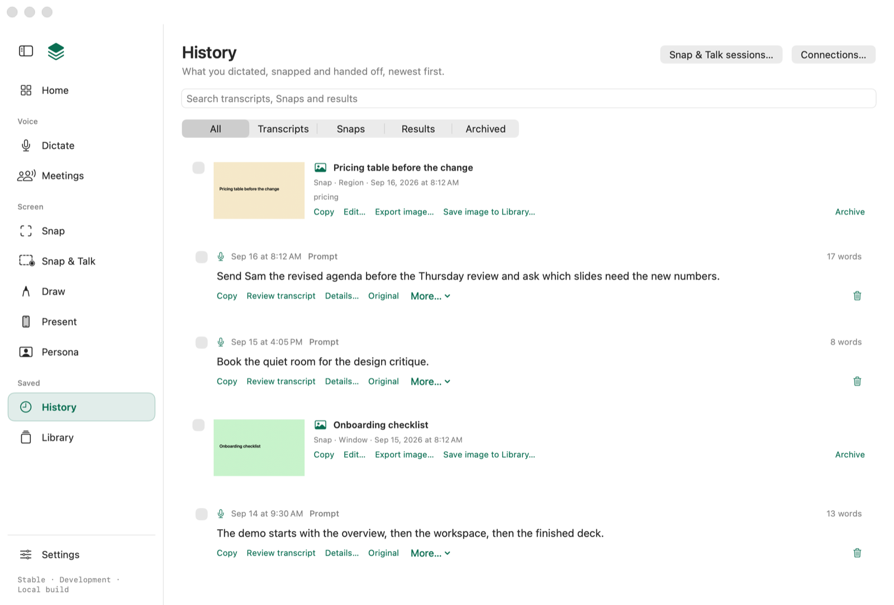
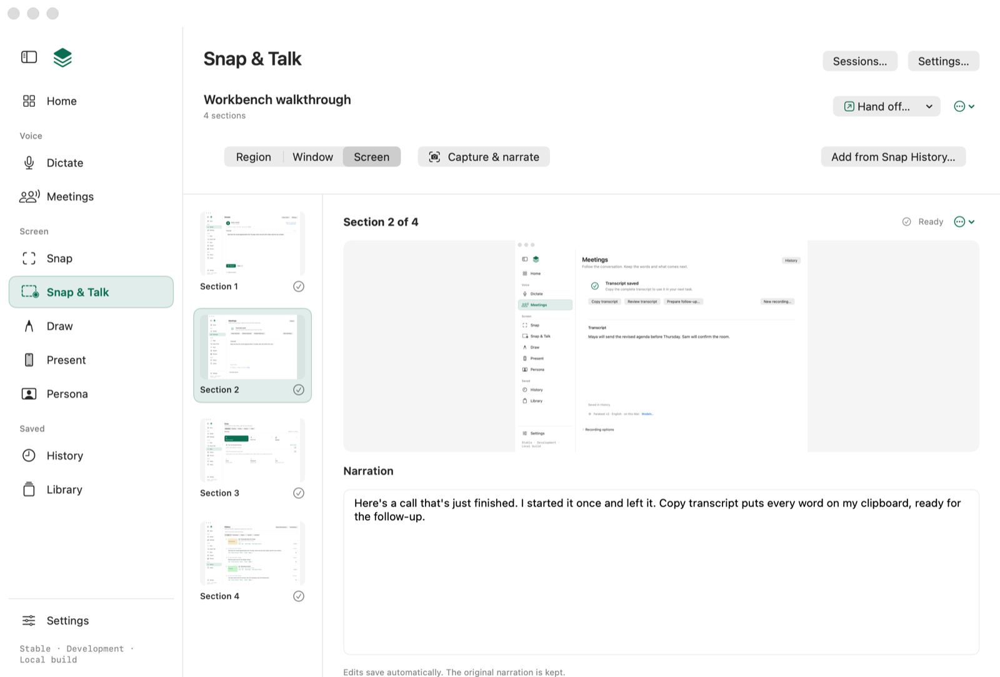
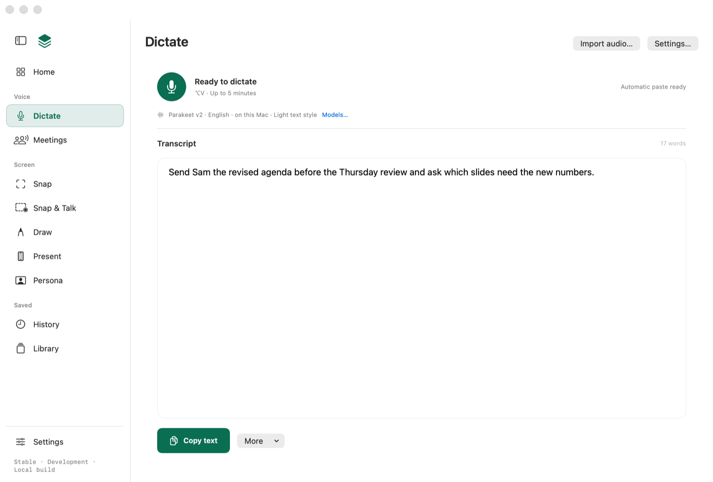
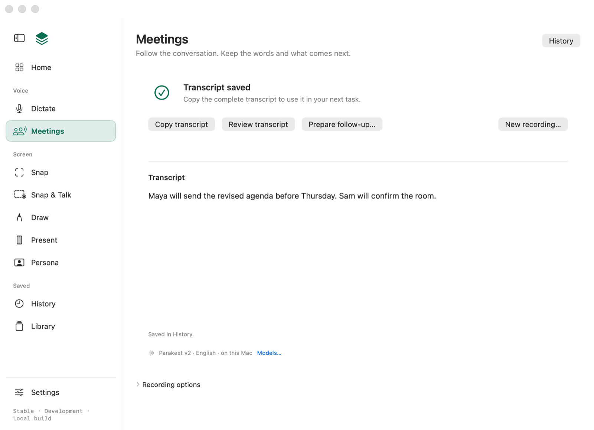
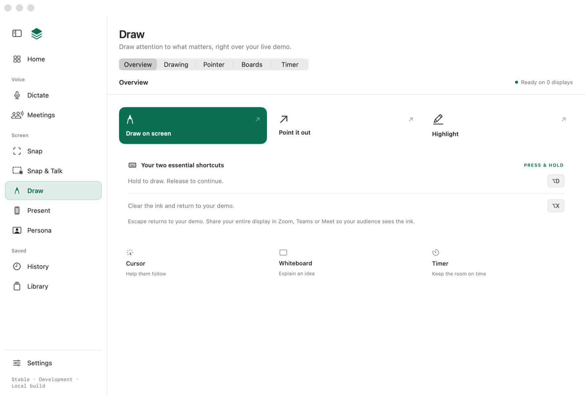

Workbench
Sample deck · a tour of Workbench
Workbench puts a set of small tools on top of every app on your Mac.



Workbench
02Dictate
Press ⌥V in any text field. Your words land where you were typing, and a copy waits in History.
Workbench
03Meetings
Start once when the call begins. Copy transcript puts every word on your clipboard.

Workbench
04Snap & Talk
Snap each screen and say what matters. Hand it off, and an assistant builds the deck.
Workbench
05Draw
Hold ⌥D and draw over anything. Let go to carry on; ⌥X clears.

Workbench
06History
Every dictation, meeting, Snap and result stays on this Mac, searchable, newest first.